📸 4. 圖片檢索功能 (ISN Image Search)
除了分析 Log 外，程式亦提供快速搜圖功能，方便根據 ISN 找到對應的測試影像（如 4cam 拼接圖）。
- ISN 自動填入：當您讀取並分析完一份 Log 後，系統會自動提取其中的 ISN 並帶入圖片檢索欄位。
- 手動切換目錄 (📂)：在檢索欄位旁提供快速按鈕，可臨時指定特定資料夾進行掃描，不限於預設的 STATION_RECORD 目錄。
- 🖼️ 批次開啟同目錄圖片：點擊後會一次性開啟該 ISN 目錄下的所有鏡頭影像（每張間隔 0.2 秒以確保視窗順利跳出）。
- 💾 複製整組圖片：點擊後可選取目的地，將該次搜尋到的 ISN 完整圖檔一次備份或移動至其他資料夾，並自動開啟目的地。
- 智慧分組顯示：搜尋結果會按 ISN 主目錄進行智慧分組，將不同分頁或不同鏡頭的圖檔整齊收納，避免清單雜亂。
- ⚙️ 設定連動：您可以在 [設定] 分頁中自定義「搜尋根路徑」與「目標資料夾關鍵字」，並使用「瀏覽...」按鈕快速挑選目錄。
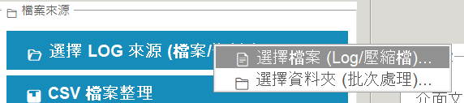
【圖 5】圖片檢索面板：輸入或自動填入 ISN 後即可開始搜圖，支援手動路徑選取
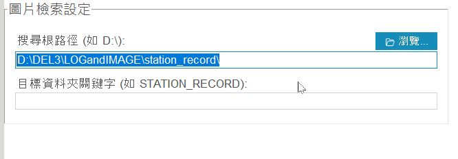
【圖 6】圖片檢索相關設定：在「設定」分頁中可指定搜尋起點與目標資料夾名稱
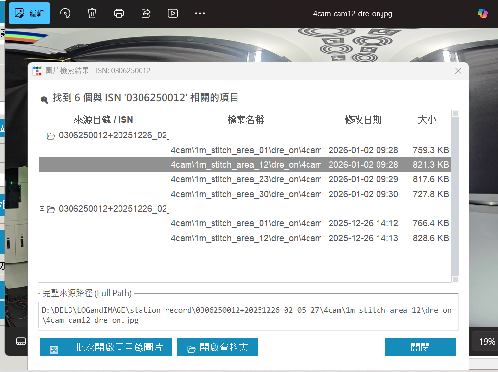
【圖 7】檢索結果視窗：提供智慧分組、批次開啟與完整路徑預覽功能
📈 5. Excel 報表生成與完成提示 (載入 2 個以上 Log 時)
當進行多檔案批次分析（載入兩個或以上的 Log）完成後，系統會自動彙總數據並生成 Excel 報表，同時給予完成通知。
- 完成通知：狀態列會顯示「Excel 生成成功！」，並列出產出的報表路徑。
- 智慧對話框：分析後會彈出彙總視窗，您可以勾選要開啟的報表並點選「開啟」。
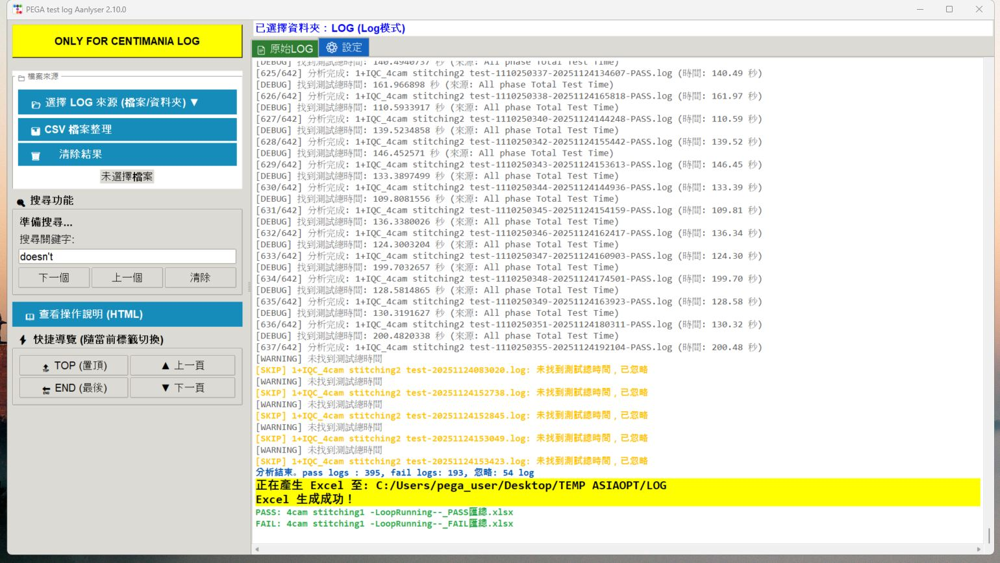
【圖 8】分析成功後，底部狀態列會顯示產出的 Excel 報表路徑與成功訊息
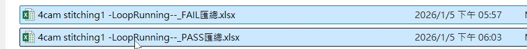
【圖 9】系統會自動在輸出資料夾中生成包含 PASS 與 FAIL 彙總的 Excel 檔案
📝 6. Excel 報表內容說明 (PASS/FAIL 彙總)
生成的 Excel 報表提供詳細的測試數據統計與錯誤點快速連結：
- PASS 彙總報表：包含整體統計與詳細列表。
- Summary：呈現良率統計、平均/最長/最短測試時間等資訊。
- Detail：記錄每個 ISN 的詳細測項比對（Criteria Check）結果。
- FAIL 彙總報表：專注於錯誤追蹤與分析。
- FAIL_LIST：彙總所有失敗原因、發生站別及對應的 Log 資訊。
- 錯誤詳情：主動標註「發現錯誤點 (預覽)」並列出詳細的比對項目細節。
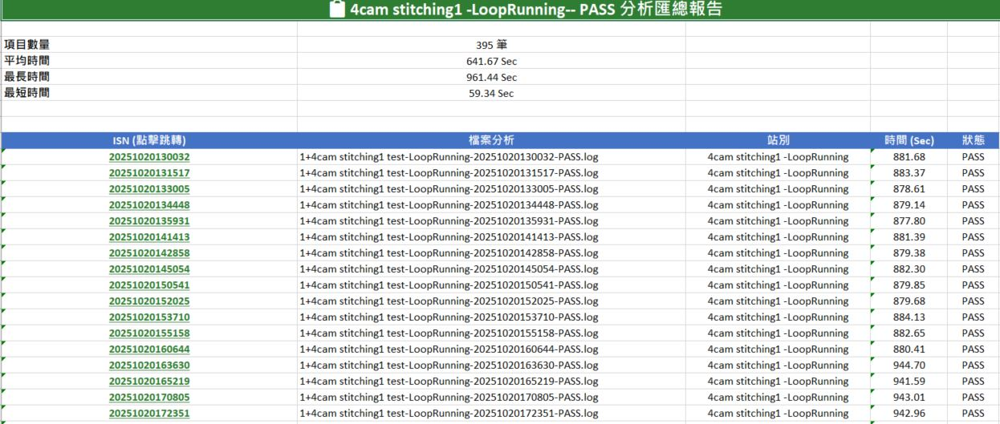
【圖 10】PASS 彙總列表：清晰呈現批次測試的所有成功數據與統計資訊
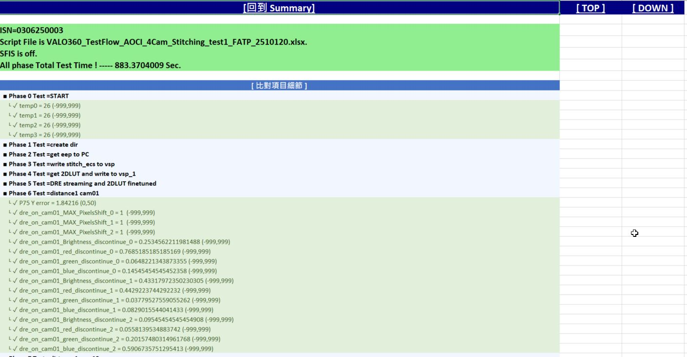
【圖 11】PASS 詳細比對：列出每個產品所有測項的實測值與規格範圍
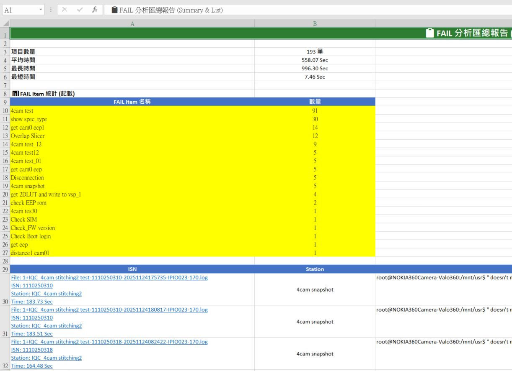
【圖 12】FAIL 彙總統計：自動歸納錯誤類型與各失敗測項的出現頻率
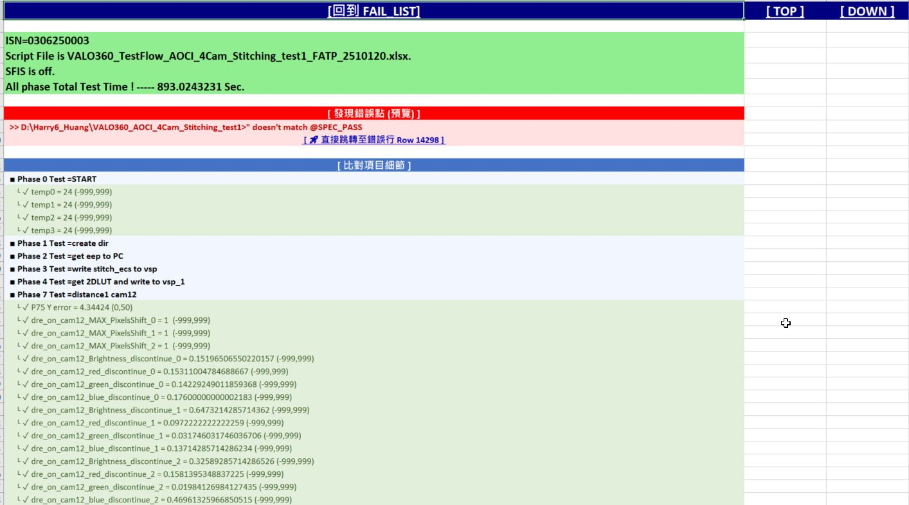
【圖 13】FAIL 報表細節：整合錯誤原因、腳本名稱與詳細的測項數值比對
🧪 7. 進階：CSV 統計數據分析
除了讀取 Log 檔案，程式也提供對產線 CSV 數據進行良率統計與圖表分析的功能。
※ 註：IPLAS 系統亦提供類似的統計數據與良率報告，本工具之分析結果僅供參考。※
- 啟動功能：在設定分頁中點選 「CSV 檔案整理」 按鈕。
- 智慧模式選擇：支援「選擇資料夾（自動搜尋）」或「直接選取多個檔案」兩種載入方式。
- 自動分析與彙總：系統會自動計算各測項的良率、均值，並生成專業的數據統計與圖表報表。
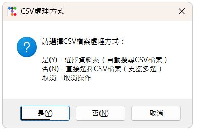
【圖 14】CSV 處理對話框：可根據需求選擇單一檔案或整個資料夾進行掃描
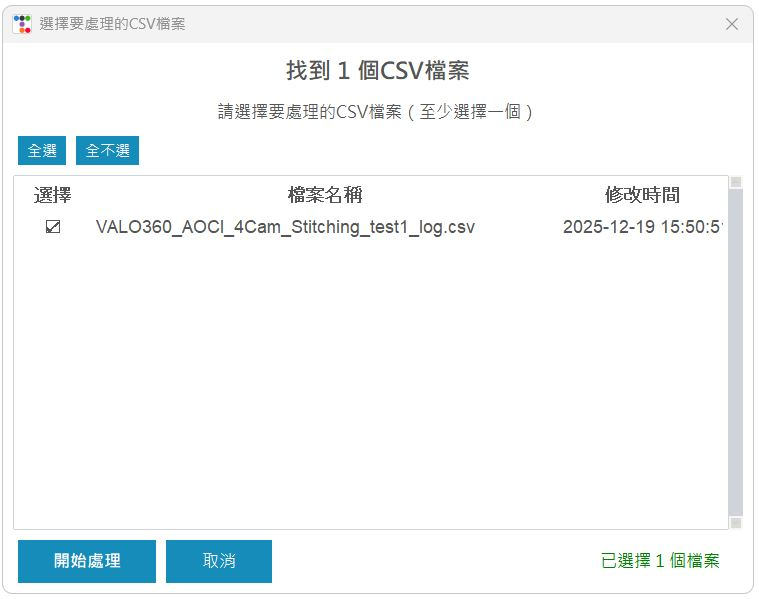
【圖 14】檔案過濾清單：系統會列出找到的符合格式檔案，供使用者勾選後開始處理
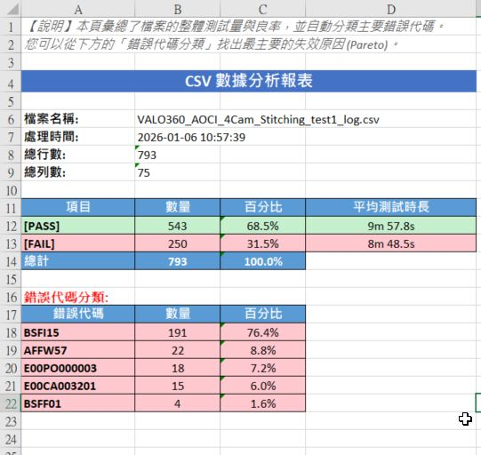
【圖 15】CSV 數據分析報表：自動統計 PASS/FAIL 比例、平均測試時長與錯誤代碼分类
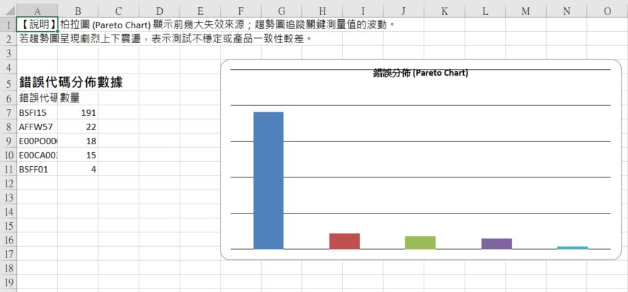
【圖 16】錯誤代碼柏拉圖 (Pareto Chart)：直觀展現前幾大失敗原因，協助工程師專注解決主要問題
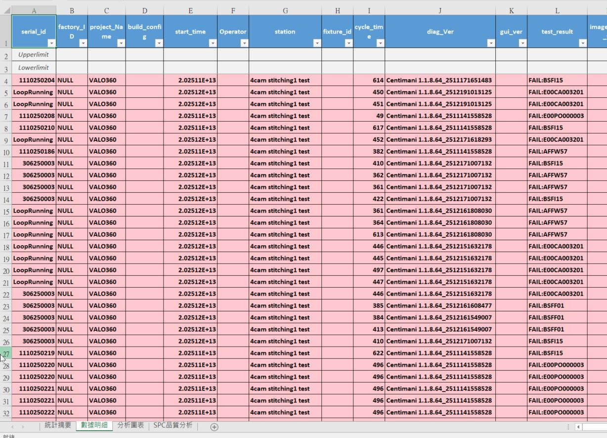
【圖 17】數據細節頁籤：保留完整的測項原始數據，並以顏色標註方便快速掃描異常